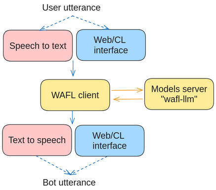

Installation
In this version, WAFL is built to run as a two-part system. Both can be installed on the same machine.
Interface side
The first part is local to your machine and needs to have access to a microphone and speaker. To install it, run the following commands:
$ sudo apt-get install portaudio19-dev ffmpeg
$ pip install wafl
After installing the requirements, you can initialize the interface by running the following command:
$ wafl init
which creates a config.json file that you can edit to change the default settings. A standard rule file is also created as wafl.rules. Please see the examples in the following chapters.
LLM side (needs a GPU)
The second part is a server that runs on a machine accessible from the interface side. This last machine will need to have a GPU to run the Large Language Model at a convenient speed. This part can be run using a docker image by running the script
$ docker run -p8080:8080 --env NVIDIA_DISABLE_REQUIRE=1 --gpus all fractalego/wafl-llm:latest
The interface side has a config.json file that needs to be filled with the IP address of the LLM side. The default is localhost. Alternatively, you can run the LLM side by cloning this repository.